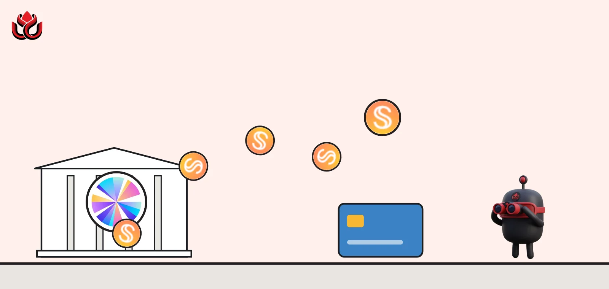
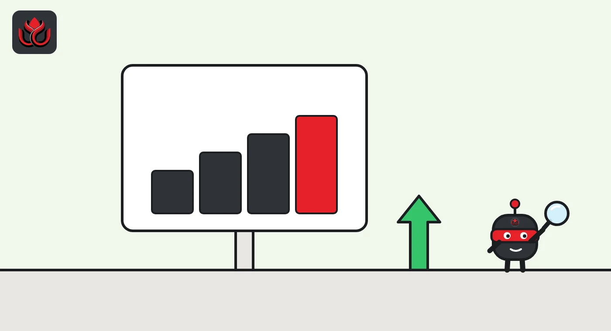
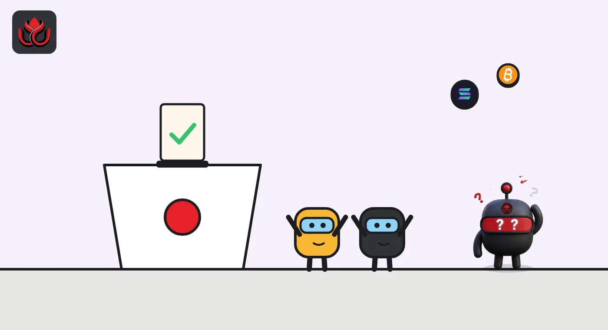

What is Sky Protocol and USDS? The former MakerDAO and its 3.80% savings rate
Sky is the protocol formerly known as MakerDAO. It issues USDS, a dollar stablecoin, and sUSDS, a savings token that earned the Sky Savings Rate of 3.80% shown on Sky.money on November 2, 2026, a rate set by vote and not guaranteed.

Key points
- Sky Protocol, formerly MakerDAO, issues USDS, a stablecoin Sky says is backed by more than a dollar of collateral per token.
- Supplying USDS gives sUSDS, which earns the Sky Savings Rate, with no lockups. SKY holders set the rate by vote.
- As of November 2, 2026, Sky.money showed a 3.80% rate and about 4.49 billion sUSDS.
- The yield comes mainly from the Sky Agent Network, independent capital allocators that borrow USDS at a fixed Base Rate and invest it.
 What DeepSea's data shows
What DeepSea's data shows
DeepSea's SKY page showed the governance token at $0.0663 on November 2, with a market cap of $1.55 billion and an FDV of $2.10 billion. Ownership is concentrated: the three largest addresses hold 43.94%, 30.51% and 8.77% of supply.
USDS also turns up in hack tracking. DeepSea's Bitget hack page shows the attackers converting much of the stolen money into USDS (26%) and DAI (14%), since both are harder to freeze than issuer-controlled stablecoins like USDT and USDC.
Data: DeepSea (desea.io), checked November 2, 2026, 7:58 a.m. ET.
What is Sky Protocol?
Sky Protocol is onchain infrastructure for dollar stablecoins. It is the project formerly known as MakerDAO, and Sky's own explainer says it has run for more than seven years. Its main products today are USDS, a dollar stablecoin, and sUSDS, a savings version.
Sky.money, the main website, is run by Skybase International, which describes itself as an independent Sky Agent. It says it does not control the protocol's contracts or governance.
DAI, the older stablecoin from the MakerDAO era, has not disappeared. When Moody's rated Sky in October, it looked at USDS and DAI together, as our story explains.
How does USDS work?
Sky calls USDS the ecosystem's fully backed unit of account. Its sUSDS explainer says each USDS is backed by more than a dollar of diversified collateral, published on Sky's financial dashboard.
The simplest way in is the Peg Stability Module (PSM). It swaps USDC for USDS one-to-one with no slippage and no protocol fee, per Sky, and held roughly $4 billion when Sky wrote that page in June 2026. That one-to-one swap with USDC is a big part of how USDS stays close to $1.
USDS itself pays nothing. It is meant to be a stable dollar you can hold, send or use in DeFi. Earning requires a separate step: converting USDS into sUSDS, or using one of the reward programs on Sky.money. Keeping the two apart lets USDS stay a plain dollar token while savers opt into the rate.

What is sUSDS and the Sky Savings Rate?
Supply USDS and you get sUSDS, an ERC-4626 vault token. Your number of tokens stays the same, but each sUSDS can be swapped for more USDS over time. Sky stresses that sUSDS is not pegged to $1: it grows in value against USDS.
The growth rate is the Sky Savings Rate (SSR). As of November 2, 2026, Sky.money showed it at 3.80%, with about 4.49 billion sUSDS in supply. Sky's June explainer gave 3.60% as of June 18, 2026. There are no lockups or cooldowns and, through Sky.money, no entry or exit fees.
The market does not set the rate. SKY holders vote on it onchain, calibrated against protocol revenue, and Sky says it can be changed or eliminated at any time.
Sky Savings Rate shown by Sky
%
Sources: Sky.money blog, Sky.money sUSDS page
How do you get USDS and sUSDS?
Per Sky.money, the usual path is to convert a stablecoin into USDS, then supply USDS to get sUSDS. USDC goes in through the Peg Stability Module at one-to-one. You can also swap approved stablecoins straight into sUSDS. To leave, you redeem sUSDS for USDS in a single transaction and, if you want, swap USDS back to USDC through the same module. Sky says there are no lockups and no fees to enter or exit through Sky.money; network gas still applies.
Sky.money also offers Sky Ecosystem Rewards. Users who supply USDS there earn points or tokens from partner projects in the Sky Agent Network instead of the savings rate. Each partner hands out a fixed amount, so your share shrinks as more people join.
Other options on Sky.money carry extra risks, per Sky's risk disclosure: vaults depend on curators and on the Morpho lending protocol, fixed-yield products depend on Pendle and on holding to maturity, and leverage magnifies losses.

Where does the yield come from?
The SSR is paid from Sky Protocol revenue, pooled in a Surplus Buffer, per the Sky.money explainer. The largest source is the Sky Agent Network: independent capital allocators that borrow USDS from Sky at a fixed Base Rate and invest it. sUSDS holders have no claim on any single agent or strategy, Sky says.
Governance splits Sky's revenue among a Solvency Reserve, SKY staking rewards and SKY buybacks, according to the Sky.money explainer.
How is USDS different from USDC?
- Issuer: USDC is issued by a company that holds cash and short-term government debt. USDS is issued by smart contracts governed by SKY holders.
- Backing: USDS is backed by a mix of onchain collateral, which Sky publishes on its financial dashboard, according to Sky. The Peg Stability Module, which held roughly $4 billion in June 2026, ties USDS closely to USDC.
- Savings: USDC pays no interest to holders. USDS holders can opt into sUSDS and the Sky Savings Rate.
- Who decides: USDC policy is set by its issuer. Sky's rates, collateral and agents are set by onchain votes.
Sky's interface operator adds a clear warning: it does not guarantee any yield or return, and past rates do not predict future ones.
What is the SKY token?
SKY is the governance token. Holders vote on protocol settings, including the savings rate, and can stake SKY for rewards. Sky.money also offers borrowing against SKY, and a product called stUSDS that takes first losses from bad debt tied to SKY, per Sky's user risk disclosure.
Sky.money itself is only a front end. Skybase International, which runs it, says it does not control Sky's contracts or governance and cannot move, withdraw or reverse anyone's onchain transactions. Its terms also say some features are restricted in some countries, that access can be suspended without notice, and that using a VPN to get around those limits is prohibited. The contracts themselves stay onchain, but most users reach them through this kind of interface.
What are the risks of USDS and sUSDS?
Sky's own risk disclosure lists the main ones:
- USDS may lose its peg, potentially to zero.
- Savings rates can change or drop to zero.
- Smart contract, oracle and keeper failures can cause losses or wrong liquidations.
- Governance can change settings, and governance attacks or concentrated voting power are possible.
- Some features are blocked in some countries, and Sky.money uses geo-blocking and VPN detection.
Outside raters have weighed in too. Moody's gave Sky a speculative-grade B3 rating in October, pointing to thin capital against about $10 billion of assets.
LC Insight analysis
This section is our reading of the facts above, not a statement of fact.
- The key change from MakerDAO is the agent model. Sky now works more like a central bank lending to independent agents, so sUSDS holders depend on how well those agents invest.
- A rate set by vote is steadier than a market rate, but it is not a promise. If revenue falls, the rate can be cut, and today's 3.80% is a snapshot.
- Capital is the weak spot outside raters flag. A thin buffer against about $10 billion of assets means a loss at one agent could matter for every holder.
What's next
- Changes to the Sky Savings Rate
- sUSDS supply and USDC liquidity in the Peg Stability Module
- Any follow-up from Moody's on Sky's capital
Frequently asked questions
Is MakerDAO the same as Sky?
Yes. Sky describes the Sky Ecosystem as formerly MakerDAO. The protocol now centers on USDS and sUSDS.
Is sUSDS pegged to $1?
No. sUSDS grows in value against USDS as the Sky Savings Rate builds up. USDS is the token that aims for $1.
Is there a lockup on sUSDS?
No. Sky says you can swap sUSDS back to USDS at any time, with no cooldown.
Who sets the Sky Savings Rate?
SKY token holders, through onchain votes calibrated against protocol revenue.
Disclaimer. This article is based on public information and the sources listed below as of the update time shown. It is for information only and is not investment, legal or tax advice. Figures may change as companies and authorities publish new data.